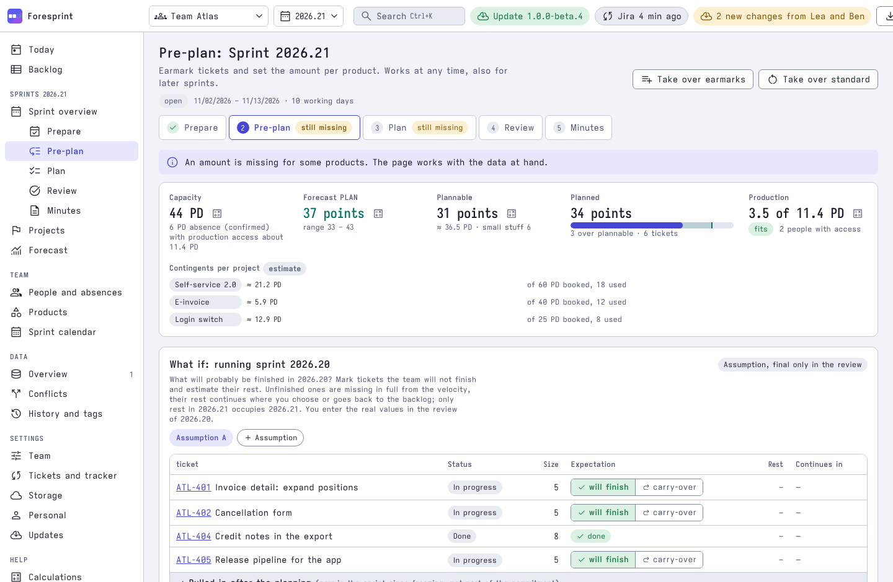
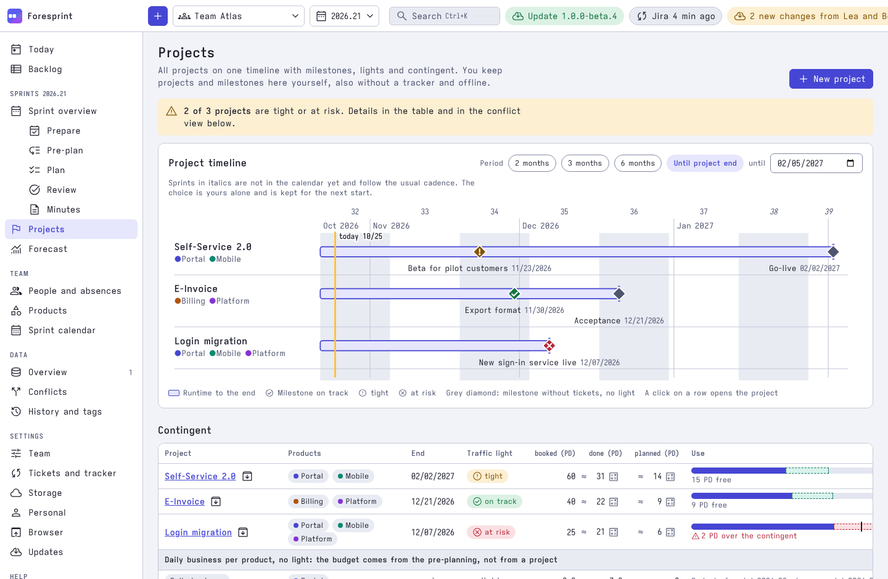
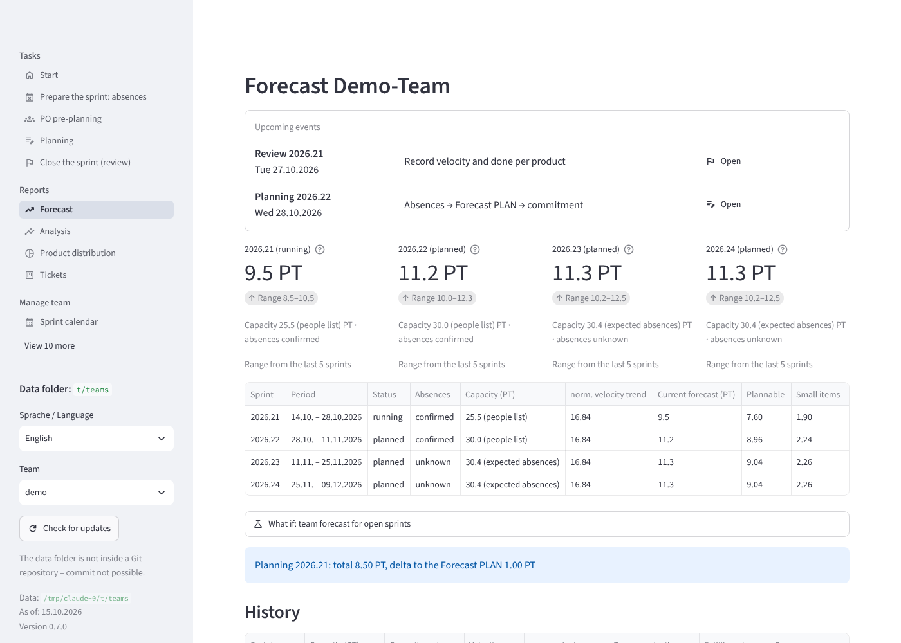
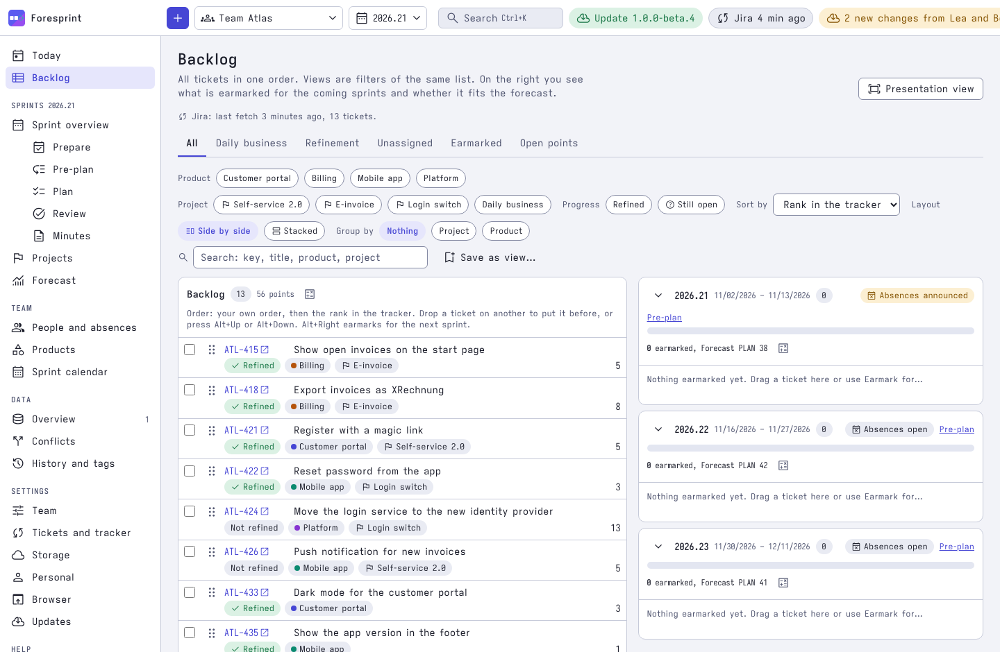

Velocity is easy. Several POs and several products in one team is the hard part.
Foresprint forecasts how much your team can plan in the next sprint, and splits that number across the product owners and products who all want a share of it. Next to each number a small calculator icon shows how it was calculated, with your own values filled in.
One team, three POs, four products, one forecast
Illustration with invented numbers (person days). The forecast is split by product and PO, and the plan has to fit the range.
| Product owner | Portal | Mobile | Billing | Platform | Total |
|---|---|---|---|---|---|
| PO A | 9 | 6 | – | – | 15 |
| PO B | – | – | 10 | 3 | 13 |
| PO C | 2 | 1 | 2 | 6 | 11 |
| Planned | 11 | 7 | 12 | 9 | 39 |
| Forecast PLAN | range 35 – 46 | 41 fits | |||
Anyone can calculate a velocity. Few tools survive your real team.
Textbook Scrum has one team, one product, one PO. Real teams carry several of each. Foresprint is built for exactly that, the anti-pattern obliterator for teams with several POs and products, so you stop reconciling it in a spreadsheet.
Plain velocity and a forecast. A calculator does this.
No problemEach PO pre-plans their own amount. With products on, totals per PO show who takes how much.
No problemThe forecast is distributed per product, and the balance over time shows who got what.
No problemPOs and products cross, projects cut across both. This is where you use Foresprint.
Use ForesprintEvery PO plans their share
Name the PO per product, collect each PO's pre-plan, and compare it with the default distribution. Disagreement shows up before the planning, not in it.
The forecast is split by product
Capacity and Forecast PLAN are divided across products. See planned, done and the balance of the last sprints per product.
Projects cut across products
Projects and products are many-to-many. Milestones, end dates and contingents in person days get a traffic light, so a squeezed project is visible early.
Mixed teams, mixed responsibilities
Not everyone on the team may touch everything. Mark who has production access and Foresprint shows the amount that needs it next to the plan.
- Capacity is split into the whole team and the people with production access.
- Plan and review record how much of each product needs production access.
- A bottleneck note warns when the planned amount exceeds what the people with access can do.
- Optional: switch the feature on only for teams that need it.
Plan page, demo team Atlas
From tickets to a forecast
The forecast comes from your real Jira tickets
Foresprint reads the tickets your Jira query returns and distributes them over the coming sprints, in the order of your board. You see which tickets fit which sprint and whether projects reach their milestones.
- Estimate, status and rank come from Jira. Assignment rules put each ticket into its product and project.
- Sprints of your board appear as lanes next to the backlog. Drag a ticket and see capacity and project dates change.
- "When will it be done?" runs a Monte Carlo analysis per project on the remaining tickets.
- Tickets refresh in the background. Sub-tasks, links, comments and attachments show in the ticket panel.
- Optional: write a planned sprint back to Jira, with preview and undo.
- Planned next: GitHub and GitLab as ticket sources. Until then, any tracker works through a CSV export.
Your data never leaves your company
Foresprint has no cloud service and no account. Team data is a folder of YAML files in a Git repository you choose, on your own Git server if you like. The program sends data only to the Jira and Git servers you configure, so with an in-house Jira and Git server nothing leaves the company.
The only other request is a daily check for a newer release, which asks GitHub only for the release list. It can be switched off (foresprint update --auto off).
Made for planning sessions, not for dashboards nobody opens.
A calm desktop window with dense tables, a guided path through the sprint, and light and dark themes.
Pre-plan: capacity, forecast and what each product wants
Capacity from your people list and their absences, the Forecast PLAN with its range, and the planned amount side by side. Over plan? It says so.
- Contingents per project, booked and used
- What-if for the running sprint, saved as an assumption

Projects: milestones and contingents across products
All projects on one timeline, each with milestones, an end date and a contingent. Tight or at risk shows as icon and word, never as color alone.

Forecast with a range, not a single promise
Normalized velocity, its trend and the Forecast PLAN for the coming sprints. Conservative, median and optimistic variants make the uncertainty visible.

Backlog in the order of your tracker
Read tickets from Jira or a CSV export. The backlog keeps the tracker's order and shows the coming sprints as lanes beside the list. Writing a planned sprint back to Jira is an option, with preview and undo.

Screenshots show the invented demo team "Atlas".
Your data, your repository, your numbers.
Git is the database
One sprint per YAML file. Easy to diff and merge, so several people work in parallel and every change has an author. Save, share and resolve conflicts from the window.
See how every number is calculated
Click the calculator icon next to a number, for example the Forecast PLAN, and the formula opens with your own values filled in. A forecast you can discuss, not just believe.
No server, no account
One native program: the window and the command line are the same file. Nothing else to install.
Your Git host, your tracker
Team data lives in any Git repository; token sign-in works with GitLab, Gitea, Forgejo and GitHub. Tickets come from Jira or a CSV export today. planned GitHub and GitLab as ticket sources.
Public holidays from all over the world
Holidays of every country and region the open holidays library covers are built in, 2001 to 2050. Set a country per person for teams spread across locations. No internet needed.
Excel round trip
Write a workbook with real formulas, edit it, and read the changes back. Estimates in story points or person days, window in English and German.
One command, checked against the published SHA-256 sums.
The script also creates a launcher, so a double click opens the window. Update with the installer or foresprint update; the program never installs updates by itself. The program is not signed yet, so Windows SmartScreen and macOS Gatekeeper warn once on the first start. Every archive is listed in checksums.txt and has a GitHub build attestation. See Installation.